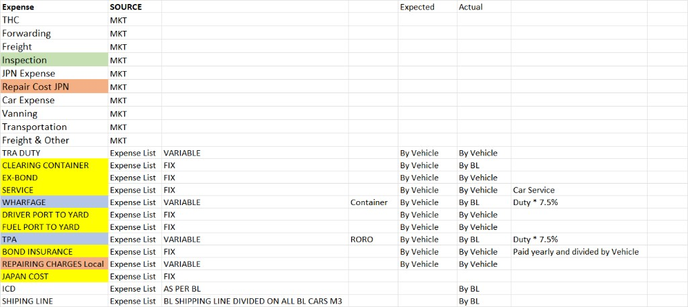

Training Manual — theory, workflow, and a button-by-button guide so anyone can understand and operate the system.
Jan International imports cars from Japan. Each car ends up with many cost pieces: purchase price in Yen, Japan-side charges (inspection, shipping, ICD…), and Tanzania-side charges (TRA duty, wharfage, TPA, clearing, service…).
Those costs do not all arrive at the same time:
N.TAN039/26MSC).The costing module exists so the team can:
Figure A — End-to-end journey from imported cars to updated per-car costs.
What we think the car will cost, based on:
Where: Car Costing document.
What accounts really booked in ERPNext:
Where collected: Import File Cost Voucher (IFCV).

Figure B — Business rules sheet: Expected vs Actual, Fixed vs Variable, By Vehicle vs By BL.
| DocType | One record means… | Main job |
|---|---|---|
| Costing | One type of cost (e.g. TRA Duty) | Master rule: Fixed/Variable/Formula, currency, GL account, By Vehicle vs By BL |
| Car Costing | One car on one Import File | Build projected TZ + Japan lines and landed COST |
| Import File Cost Voucher | One Import File / shipment batch | Pull posted JE/PI, allocate to cars, optionally push into Car Costings |
Supporting idea: every car is an Item. Cars on a shipment share an Import File (named like the supplier invoice). Matching rule for vehicles:
Import File.bl_number → Item.custom_blImport File.supplier_invoice_no → Item.custom_bl| Term | Meaning |
|---|---|
| BL | Bill of Lading — shipping document grouping cars (e.g. MEDUW3445865) |
| Import File | ERPNext document for a supplier invoice / shipment batch (e.g. N.TAN039/26MSC) |
| M3 | Cubic metres of the car — used to share shipping/ICD fairly |
| Costing | Named cost type with rules and optional GL account |
| Projected amount | Estimate on a Car Costing line |
| Allocation | Share of an IFCV expense assigned to one Item/car |
| By BL Equal | Split expense equally across all cars on the Import File |
| By BL M3 | Split expense proportional to each car’s M3 |
| By Vehicle Manual | User (or auto chassis match) assigns amounts per car |
| Landed COST | TOTAL COST USD × TZS/USD exchange (our projected COST) |
Open: Desk → Costing. This is configuration, usually maintained by a super user, not changed daily.
| Field | What it does | How to explain it |
|---|---|---|
| Costing Code | Internal unique key (e.g. tra_duty) |
Used by formulas and IFCV mapping. Do not rename casually. |
| Costing Name | Label people see (e.g. TRA DUTY) | Matches the expense-list wording. |
| Region | Tanzania or Japan | Controls which table on Car Costing the line appears in (TZS vs USD). |
| Entry Mode | Fixed Variable Formula |
Fixed = system fills default (editable). Variable = user types the estimate for this car. Formula = system calculates (user should not invent the number). |
| Allocation Scope | By Vehicle or By BL |
Tells IFCV how actuals usually arrive. By Vehicle → Manual mapping dialog. By BL → Equal or M3 split of one bulk amount. |
| Account | Link to Chart of Accounts | Critical for IFCV. When a JE/PI posts to this account, IFCV auto-selects this Costing. |
| Currency | TZS or USD (etc.) | Drives currency on Car Costing lines. |
| Default Projected Amount | Used when Entry Mode = Fixed | Example: Ex-Bond 139,314; Japan Cost 261; Inspection 170. |
| Display Order | Sort order on the form | Cosmetic / evaluation order only. Not Excel import sequence. |
| Formula / Depends On | Calculation expression | Example Wharfage: {line.tra_duty} * 0.07 (matches Excel Duty×7%). |
| Disabled | Hide obsolete heads | Old heads (e.g. M3-as-cost-line) stay disabled, not deleted. |
Open: Desk → Car Costing. One document = one car’s projected cost worksheet.
| Field | What happens / what user does |
|---|---|
| Series | Auto name like CC-2026-00024. Leave default. |
| Item | Required. Pick the car Item. On a new doc, selecting Item triggers Load from Item. |
| Import File | Links this costing to the shipment (e.g. N.TAN039/26MSC). Auto-resolved from Item BL when possible. |
| Costing Date | Date of this worksheet (defaults Today). |
| Exchange Rate (TZS/USD) | Required. Converts USD summaries to TZS COST. Excel sample uses 2700. |
| YEN/USD Rate | Converts purchase Yen to USD (default 155). |
| Chassis / Maker / Model | Read-only, fetched from Item. For identification only. |
| M3 | Car volume. Header field (not a cost line). Needed for M3-based shares and readiness. |
| YEN | Purchase price from Item (custom_price), read-only on form. |
Examples: TRA Duty, Clearing, Ex-Bond, Service, Wharfage, Driver, Fuel, TPA, Bond Insurance, Local Repair.
Each row: Costing, code, mode, account, currency, Projected Amount, override flag, remarks.
Examples: Japan Cost, Inspection, ICD, Shipping Line.
Same structure as TZ table, different currency/region.
| Field | Meaning (Excel-aligned) |
|---|---|
| TOTAL EXP TSH | Sum of TZ lines excluding TRA Duty (Excel col Y = Q…X). |
| TSH TO USD | TOTAL EXP TSH ÷ Exchange Rate. |
| TOTAL EXP USD | TSH TO USD + all Japan line amounts. |
| YEN IN USD | YEN ÷ YEN/USD rate. |
| TOTAL COST USD | Duty USD + TOTAL EXP USD + YEN IN USD. |
| COST | TOTAL COST USD × Exchange Rate = landed cost in TZS. |
| PRICE | Currently same as COST (selling margin/VAT from Excel not applied yet). |
| Days Since Purchase | Informational age of stock. |
| Readiness | HTML checklist (Item, Import File, FX, M3, TRA Duty). Display only. |
| Control | When available | What it does |
|---|---|---|
| Load from Item | Always on form | Rebuilds TZ + Japan lines from active Costing masters; pulls chassis/maker/model/Yen/M3 from Item; fills Fixed defaults; keeps existing projected amounts where present; recalculates; saves. On new docs, selecting Item calls this automatically. |
| Actions → Recalculate | Saved documents only | Re-runs Fixed + Formula lines and summary math. Shows alert with Cost / Price. Use after changing Duty, M3, rates, or overrides. |
| Save | Draft | Validates exchange rate and recalculates during validate. |
| Submit | Draft, when ready |
Locks the Car Costing and copies projected lines + cost/price/M3 onto the Item’s Costing tab
(custom_tz_costing, custom_japan_costing, etc.).
|
| Cancel / Amend | Submitted | Standard ERPNext cancel/amend if corrections needed after submit. |
Open: Desk → Import File Cost Voucher. One document = one Import File’s actual expense allocation worksheet.
| Field | What it does |
|---|---|
| Series | Auto name like IFCV-2026-00001. |
| Import File | Required. Selecting it auto-loads Vehicles + Expenses from the database (submitted JE/PI linked to that Import File). |
| Posting Date | Voucher date (defaults Today). |
| Auto Update Car Costing Projected | If checked, on Submit IFCV writes allocated amounts into matching draft Car Costing lines and recalculates those cars. |
| Default Distribution Basis | Equal or M3. Affects how newly loaded By-BL expenses are proposed (By BL Equal vs By BL M3). Changing it reloads from Import File. |
Auto-filled list of cars. Columns typically include Item, Chassis, Maker, M3, Stock ID.
| Column | Meaning |
|---|---|
| Expense Account | GL account from JE/PI line. |
| Description | Prefer JE user remark (often contains chassis) else title. |
| Amount | Company currency amount to allocate. |
| Source | JE/PI document name (audit trail). |
| Costing | Auto if Account matches a Costing; else set manually. |
| Code | Fetched from Costing. |
| Distribution Method | By BL Equal By BL M3 By Vehicle Manual |
| Remarks | Optional notes. |
When you pick a Costing on an expense row:
Result table: each row is “this Item gets this Costing / account for this amount, from expense row #N”.
Figure C — The three distribution methods you must teach.
| Control | What it does | When to use |
|---|---|---|
| Actions → Reload from Import File | Re-reads vehicles + JE/PI expenses for the selected Import File. Clears and rebuilds Vehicles/Expenses tables (allocations cleared until save). | After new JVs/PIs were posted, or if tables look stale. |
| Actions → Rebuild Allocations | Simply saves the document, which runs distribution logic again. | After changing distribution methods or amounts. |
| Actions → Distribute Manually | Opens dialog for expense rows marked By Vehicle Manual. Pick expense row → edit amounts per vehicle → Remaining must be ~0 → Apply. Includes “Quick: put full amount on one car”. If remark contains chassis, amounts default to that car. | Any By Vehicle actual (per-car JE), or when auto-map is wrong. |
| Save | Validates and rebuilds allocations; updates totals. | Before submit; after edits. |
| Submit | Locks voucher. If Auto Update is on, pushes allocations into draft Car Costings (matching Import File + Item) and recalculates them. | When allocation review is finished. |
ZRR70-0198971 | TOYOTA NOAH…). IFCV can then auto-map without clicking through every row.
Import File: N.TAN039/26MSC · BL: MEDUW3445865 · Cars: 7
| Question / mistake | Clear answer |
|---|---|
| Why is Costing blank on an expense? | JE/PI account is not linked on any Costing. Set Costing.Account to that GL account, then Reload. |
| Why did Stock In Hand appear before? | It is the car purchase. System now skips Stock / Stock In Hand accounts on purpose. |
| Why doesn’t Excel COST match our COST? | Excel adds City Levy + VAT from selling price. We show landed COST only (for now). |
| Wharfage 7% or 7.5%? | Excel formula is Duty×7%. Use 7%. (Some notes sheets said 7.5% — Excel wins.) |
| Manual dialog says no rows | No expense is set to By Vehicle Manual. Set Costing / method, Save, try again. |
| Vehicles = 0 on IFCV | Import File BL/supplier invoice doesn’t match Item.custom_bl, or cars disabled. |
| Recalculate crashed on readiness_html | Fixed: HTML field is display-only; recalculate no longer db_sets it. |
| Can one BL JV replace seven per-car JVs? | Yes for By BL costs. For By Vehicle actuals, either post per car (best) or post one total and distribute manually in the dialog. |
Document: Car Costing & IFCV Training Manual · vsd_jan_integration · based on live design for Jan International.
Source numbers validated against workspace file 1 BL COST.xlsx (NEW COST FILE).